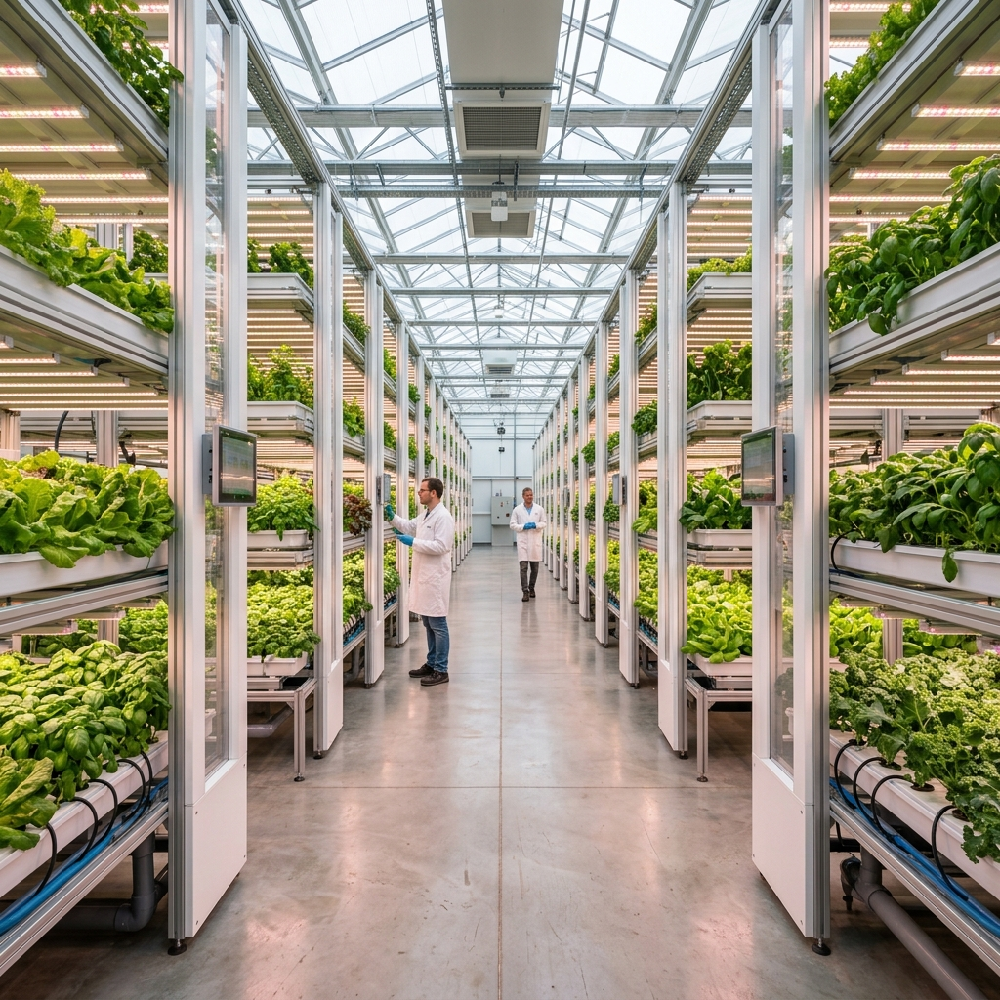
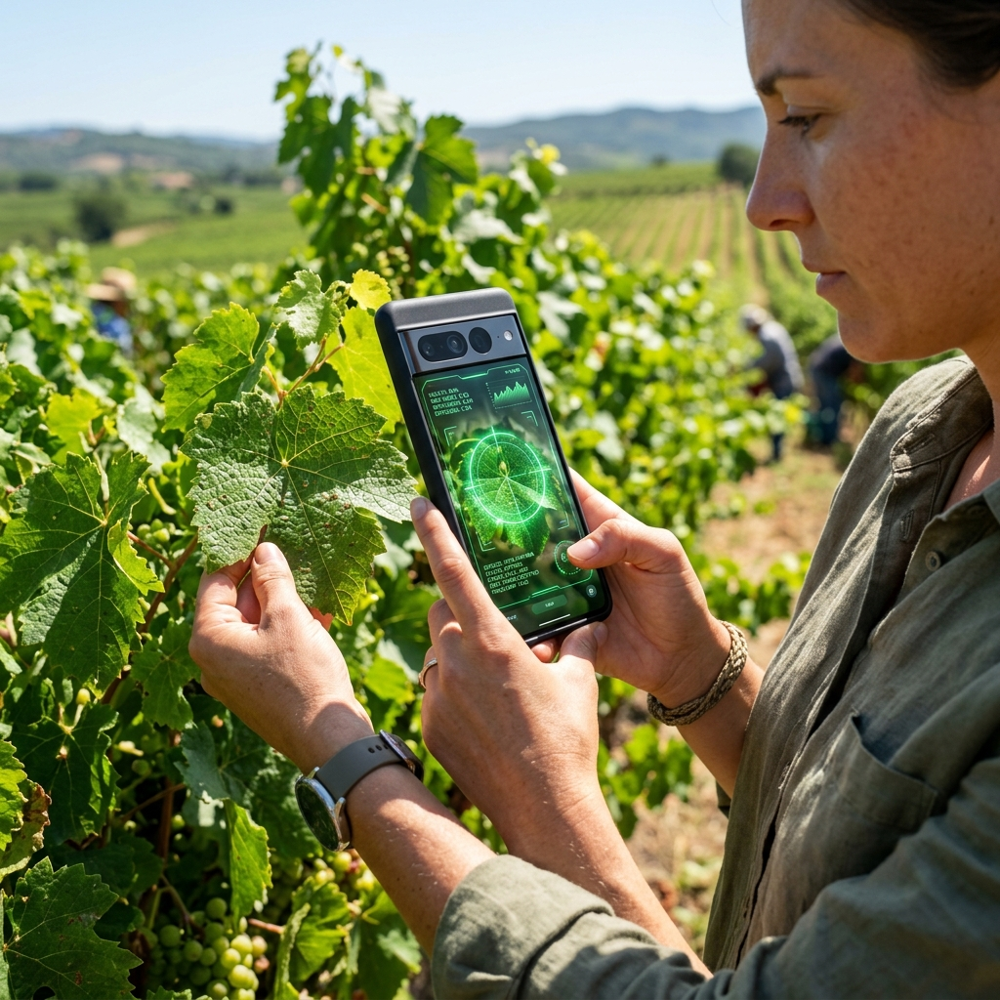

Smarter Farming,
Healthier Crops.
Protect your yields with advanced plant disease diagnostics. Upload a leaf photo to instantly detect pathogen strains, retrieve statistical confidence, and receive tailored care treatments.
Built to Support Farmers
Empowering agricultural decisions with precision diagnostics, immediate treatment plans, and continuous crop health logs.
Instant AI Diagnostics
Click or drag-and-drop crop leaves. Our deep neural networks analyze textures and colors to isolate diseases within 3 seconds.
Open Diagnostic CoreActionable Treatment Plans
Receive transparent organic remedies and precise chemical solutions immediately after diagnosis. Designed to arrest pathogen growth without crop toxicity.
Browse Remedy ArchiveStatistical Confidence
Receive transparent confidence indexes evaluated directly by deep-learning visual model matches.
Scan Vault
Every crop scan is cataloged securely in the cloud via Supabase, creating an accessible visual timeline of crop health.
Microclimate Alerts
Pair weather metrics with spraying warnings to select the optimal hour for foliar fertilizer and copper sprays.
Have Questions or Need Direct Advice?
Ask our AgriSense AI Botanist assistant regarding soil fertilizers, humidity, or persistent spot anomalies.
Plant Health Diagnostics
Upload a clean photo of the infected crop leaf to execute the neural prediction model.
Upload Leaf Image
Drag and drop a photo here, or click to browse
Focus Foliage
Position infected spot centered in bright daylight.
AI Scan
System reads color texture patterns within 3s.
Cure Plan
Retrieve immediate organic and chemical treatments.
specimen micro-diagnostics
Tomato Early Blight
Alternaria solaniEarly blight is caused by the fungus Alternaria solani. It is a common foliage disease of tomatoes that initially appears as small, brown-to-black spots on older leaves, which enlarge and form concentric...
agronomist verified immediate cure
Prune lower foliage to eliminate source spores. Apply a certified foliar spray containing copper hydroxide early in the evening window. Avoid overhead sprinkling to hold propagation.
High-potassium foliar feed & organic copper-based fungicide spray
Farmer Scan History
A persistent archive of your past diagnostic assessments, matching logs, and treatments.
No Scan Records Yet
Your logged scans will appear in a chronological timeline here once you complete diagnostics.
Agronomy Treatment Library
Comprehensive lookup archive detailing clinical protocols, pathogens, and seasonal crop remedies.
Can't identify a specific crop anomaly?
Upload a clean photograph of the infected leaf to submit it directly to our Extension Specialist Advisory Board for manual review.
Crop Disease Outbreak Heatmap
Real-time regional pathogen spread reports and biological hazard risks monitored globally.
Active Spreading Risk Map
Live Meteorological Advisory
Localized agricultural forecast matrices paired with instant crop treatment spraying advisories.
Current Field Conditions
55%
Humidity
8 km/h
Wind Speed
12%
Precipitation
soil moisture & evaporation
Thermal Soil Temperature Map
Microclimate Sensors Injected
Dedicated Botanist AI Center
Chat directly with our plant health cognitive expert regarding soil diagnostics, crop anomalies, and botanical care schedules.
AgriSense Bot Center
Specialist Agronomist AI OnlineProtecting Harvests, Empowering Communities
Our agronomists analyze localized soil indexes, weather patterns, and leaf tissue diagnostics to provide sustainable, organic precautions and chemical solutions for farming communities worldwide.
AgriSense was built with the mission to arrest regional epidemics before they impact consumer prices or strip rural fields of livelihood reserves.
98%
Farmer Satisfaction45k+
Registered FarmsThree Steps to Defending Your Yield
Learn how the AgriSense diagnostic core processes plant cells and provides cures.
Foliage Field Scan
Farmer snaps or uploads a clear crop photograph in high bright daylight.

Neural Analysis
AI scans chloroplast density grids and surface spots against thousands of strains.

Actionable Plan
Retrieve immediate organic spraying and clinical chemistry care plans in 3 seconds.
Professional Advisory Board
AgriSense is backed by certified agronomists and plant pathology specialists working to protect global crop yields.
Dr. Elena Vance
Senior Plant PathologistElena has spent 15 years researching cereal grain epidemics. She supervises our Rust and fungal prediction modules.
Dr. Rajesh Kumar
Agronomy Extension LeadRajesh coordinates base farming outreach and soil fertility advisories, matching organic treatments to crop species.
Dr. Sophia Martinez
Crop Chemistry DirectorSophia certifies our biological controls and systemic fungicide recommendations, keeping toxicity levels optimal.
Engineered for the Field
Need Farm Visits or Custom Analysis?
Our regional expert teams conduct physical crop inspections, chemical soil reviews, and custom field maps to resolve persistent disease challenges.